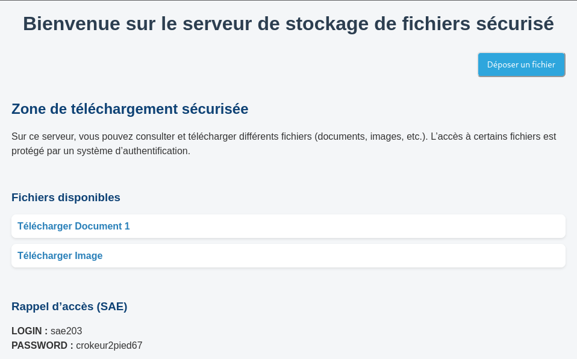

En quoi consiste notre projet ?
Notre projet est un système de dépôt et de partage de fichiers sécurisé. Les utilisateurs peuvent téléverser des fichiers sur la plateforme de manière simple et rapide, sans avoir besoin de mot de passe. Une fois déposés, les fichiers sont stockés et restent accessibles via un lien.
En revanche, la récupération des fichiers est protégée par un mot de passe afin de garantir leur confidentialité. Seules les personnes disposant du mot de passe associé peuvent accéder au fichier et le télécharger.
L'objectif du projet est de proposer une solution légère, efficace et sécurisée pour le partage temporaire ou contrôlé de fichiers entre utilisateurs.

Quelles sont les fonctionnalités du projet ?
Fonctionnalités abouties
- Dépôt de fichiers par glisser-déposer ou sélection manuelle, sans authentification requise.
- Génération automatique d'un nom de fichier aléatoire pour éviter les collisions et protéger la confidentialité.
- Génération d'un lien de téléchargement sécurisé communiqué à l'utilisateur après le dépôt.
- Protection du téléchargement par authentification HTTP Basic (login + mot de passe).
- Liste des fichiers disponibles visible par tous, mais téléchargeable uniquement par les utilisateurs authentifiés.
- Suppression de fichiers réservée aux utilisateurs connectés.
Fonctionnalités non abouties
Certaines fonctionnalités n'ont pas pu être implémentées dans le cadre de ce projet, mais il est intéressant d'en parler.
Nous avions notamment envisagé l'intégration d'une IA capable d'analyser les fichiers déposés afin de détecter s'ils sont potentiellement malveillants (virus, fichiers corrompus ou contenus suspects). Ce système permettrait d'ajouter une couche de sécurité supplémentaire avant même le stockage du fichier.
De plus, la mise en place d'un système de comptes utilisateurs avait été envisagée, ainsi qu'une base de données relationnelle pour stocker de manière sécurisée les identifiants, mots de passe et métadonnées des fichiers déposés.
Explications des différents codes
Le projet se compose de plusieurs fichiers aux rôles bien distincts. Voici une explication détaillée de chacun d'eux, de leur fonctionnement et des choix techniques effectués.
auth.php
PHP · Authentification
Ce fichier est le cœur du système de sécurité. Il centralise toute la logique
d'authentification HTTP Basic et est inclus (require_once) dans tous les scripts PHP
qui nécessitent une protection.
Il définit d'abord les identifiants valides (login et mot de passe), puis expose trois fonctions :
getAuthCredentials()— Récupère le login et le mot de passe envoyés par le navigateur, soit via les variables serveur Apache (PHP_AUTH_USER/PHP_AUTH_PW), soit en décodant manuellement l'en-tête HTTPAuthorization: Basic …encodé en Base64.isAuthenticated()— Compare les identifiants récupérés avec les valeurs attendues. Retournetruesi la connexion est valide,falsesinon.requireAuth()— Force l'authentification : si l'utilisateur n'est pas connecté, envoie un en-têteWWW-Authenticatequi déclenche la popup de connexion du navigateur, puis interrompt l'exécution avec une réponse HTTP 401.
// Extrait de auth.php
function getAuthCredentials() {
// Méthode 1 : Apache pré-remplit ces variables
if (isset($_SERVER['PHP_AUTH_USER'])) {
return ['user' => $_SERVER['PHP_AUTH_USER'],
'pass' => $_SERVER['PHP_AUTH_PW']];
}
// Méthode 2 : lecture manuelle du header Authorization
$authHeader = $_SERVER['HTTP_AUTHORIZATION'] ?? '';
if (strpos($authHeader, 'Basic ') === 0) {
$credentials = base64_decode(substr($authHeader, 6));
list($user, $pass) = explode(':', $credentials, 2);
return ['user' => $user, 'pass' => $pass];
}
return null;
}check_auth.php
PHP · Endpoint de vérificationCe fichier est très court mais remplit un rôle précis : il sert de point de déclenchement pour la popup d'authentification du navigateur.
Quand l'utilisateur clique sur « Se connecter » dans l'interface, le JavaScript envoie une requête vers
check_auth.php. Si l'utilisateur n'est pas encore authentifié, requireAuth()
renvoie un HTTP 401, ce qui provoque l'affichage de la boîte de dialogue native du navigateur.
Une fois les identifiants saisis et validés, le fichier renvoie simplement {"success": true}.
// check_auth.php
require_once 'auth.php';
requireAuth(); // déclenche la popup si non connecté
header('Content-Type: application/json');
echo json_encode(['success' => true, 'authenticated' => true]);upload.php
PHP · Dépôt de fichiersCe script gère la réception et le stockage des fichiers envoyés par les utilisateurs. Contrairement au téléchargement, l'envoi est intentionnellement public (sans authentification) : n'importe qui peut déposer un fichier sur le serveur.
Voici le déroulement complet du traitement :
La génération du nom de fichier utilise bin2hex(random_bytes(8)) : cela produit
une chaîne de 16 caractères hexadécimaux totalement aléatoires, à laquelle on ajoute l'extension
d'origine. Cela garantit que deux envois du même fichier produisent des liens différents,
et empêche de deviner le nom d'un fichier par force brute.
// Génération du nom aléatoire
$randomName = bin2hex(random_bytes(8)) . ($extension ? '.' . $extension : '');
// Déplacement sécurisé du fichier temporaire
if (move_uploaded_file($file['tmp_name'], $targetPath)) {
chmod($targetPath, 0644); // permissions lecture seule pour les autres
echo json_encode(['success' => true, 'link' => $downloadLink]);
}upload.php n'effectue pas de vérification sur le type MIME ou la taille maximale du fichier. En production, il serait indispensable d'ajouter ces contrôles.
files.php
PHP · Listage des fichiers
Ce script génère la liste de tous les fichiers présents dans le dossier /files/
et la retourne au format JSON. Il est interrogé à chaque chargement de la page et après chaque action
(dépôt, suppression) pour maintenir l'affichage à jour.
Le comportement diffère selon l'état de l'utilisateur :
- Utilisateur non connecté : reçoit uniquement le nom, la taille et la date des fichiers. Aucun lien de téléchargement n'est inclus.
- Utilisateur authentifié : reçoit en plus l'URL complète vers
download.phpet le flagcanDelete: true.
La liste est ensuite triée par date décroissante (le fichier le plus récent en premier) grâce à
usort() avec une comparaison de chaînes sur le champ date.
// Exemple de réponse JSON (utilisateur connecté)
{
"success": true,
"authenticated": true,
"files": [
{
"name": "a3f8b2c1d4e5f6a7.pdf",
"size": 204800,
"date": "2025-06-10 14:22:05",
"url": "https://example.com/download.php?file=a3f8b2c1d4e5f6a7.pdf",
"canDelete": true
}
]
}download.php
PHP · Téléchargement sécurisé
C'est le fichier le plus important en matière de sécurité : il gère le téléchargement protégé
des fichiers. Il commence systématiquement par appeler requireAuth(), ce qui garantit qu'aucune
donnée n'est transmise sans authentification valide.
Étapes du traitement :
- Authentification obligatoire via
requireAuth(). - Récupération du paramètre
?file=dans l'URL. - Sanitisation du nom avec
basename()pour empêcher les attaques de type path traversal (../../etc/passwdpar exemple). - Vérification de l'existence du fichier sur le disque.
- Détection automatique du type MIME via
finfo. - Envoi des en-têtes HTTP appropriés puis du contenu du fichier.
// Sanitisation du nom (empêche le path traversal)
$filename = basename($_GET['file']);
// Détection du type MIME
$finfo = new finfo(FILEINFO_MIME_TYPE);
$mimeType = $finfo->file($filepath) ?: 'application/octet-stream';
// En-têtes de téléchargement
header('Content-Type: ' . $mimeType);
header('Content-Disposition: attachment; filename="' . $filename . '"');
header('Content-Length: ' . filesize($filepath));
readfile($filepath);Content-Disposition: attachment force le téléchargement plutôt que l'affichage dans le navigateur, quel que soit le type de fichier.
delete.php
PHP · Suppression de fichiers
Ce script permet de supprimer définitivement un fichier du serveur.
Comme pour le téléchargement, l'authentification est exigée en première ligne.
De plus, seules les requêtes de méthode POST sont acceptées, ce qui empêche
une suppression accidentelle via un simple lien cliquable.
Le nom du fichier est transmis dans le corps de la requête au format JSON
({ "file": "nom_du_fichier" }), lu grâce à file_get_contents('php://input')
et décodé avec json_decode().
// Lecture du corps JSON
$input = json_decode(file_get_contents('php://input'), true);
$filename = basename($input['file'] ?? '');
$filepath = $filesDir . $filename;
// Suppression si le fichier existe
if (file_exists($filepath) && unlink($filepath)) {
echo json_encode(['success' => true, 'message' => 'Fichier supprimé']);
}basename() est utilisé pour éviter qu'un attaquant puisse supprimer des fichiers en dehors du dossier /files/ en manipulant le nom (ex. ../auth.php).
app.js
JavaScript · Interface dynamique
Ce fichier contient toute la logique côté client. Il est exécuté une fois le DOM
chargé et orchestre les interactions entre l'utilisateur et les scripts PHP via des requêtes
fetch() asynchrones (API Fetch, sans rechargement de page).
Dépôt de fichiers
Le dépôt est géré via deux mécanismes : un clic sur la zone (qui ouvre le sélecteur de fichiers)
et le glisser-déposer (drag & drop). Les événements dragover, dragleave
et drop ajoutent/retirent une classe CSS pour l'effet visuel. La fonction uploadFile()
envoie ensuite le fichier via un FormData en POST vers upload.php.
Chargement dynamique de la liste (chargerFichiers)
Cette fonction est appelée au chargement de la page et après chaque action. Elle interroge
files.php et construit dynamiquement le HTML de la liste. Elle adapte l'affichage
selon l'état d'authentification retourné par le serveur :
- Si connecté : affiche un lien de téléchargement cliquable + un bouton « Supprimer ».
- Si non connecté : affiche le nom sans lien + un bouton « 🔒 Connexion ».
Authentification (promptLogin)
En cliquant sur « Se connecter », le JS envoie une requête à check_auth.php.
Si la réponse est 401, le navigateur affiche automatiquement sa popup de connexion native.
Après validation, chargerFichiers() est rappelée pour actualiser la liste.
// Envoi du fichier (extrait)
async function uploadFile(file) {
const formData = new FormData();
formData.append('file', file);
const response = await fetch('upload.php', { method: 'POST', body: formData });
const data = await response.json();
if (data.success) {
// Affichage du lien + rafraîchissement de la liste
chargerFichiers();
}
}Formatage des tailles (formatBytes)
Une petite fonction utilitaire convertit les tailles brutes en octets en une représentation lisible (Ko, Mo, Go) avec deux décimales.
index.html & stylesheet.css
HTML · CSS · Interface
index.html est la page unique de l'application. Elle définit la structure
HTML : une barre d'état d'authentification (#auth-status), une zone de dépôt
(#drop-zone), une zone de résultat d'envoi (#upload-result) et une liste
de fichiers (#file-list). Ces éléments sont manipulés dynamiquement par app.js.
stylesheet.css gère l'ensemble du style visuel : mise en page, couleurs, effets de survol
sur les boutons, style de la zone de dépôt (avec animation au drag), badges d'état de connexion
(vert / rouge) et affichage en ligne des éléments de la liste de fichiers.